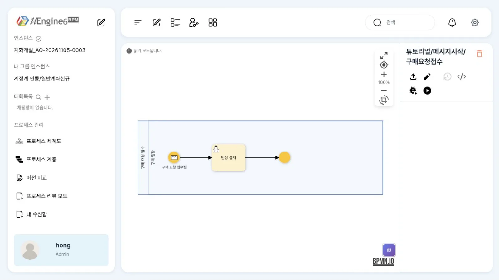
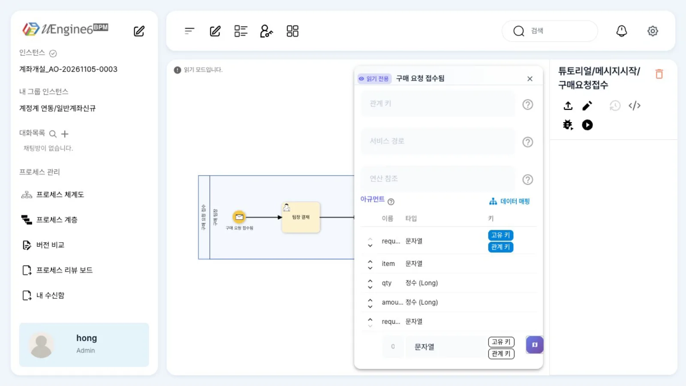
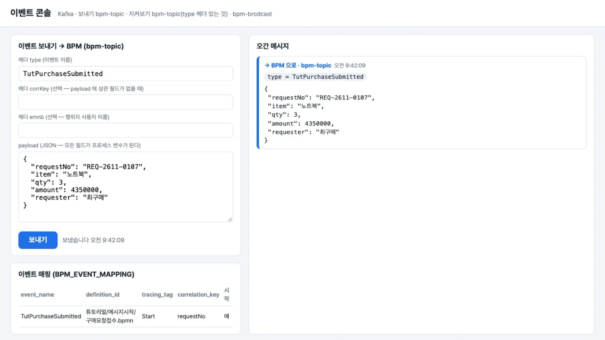
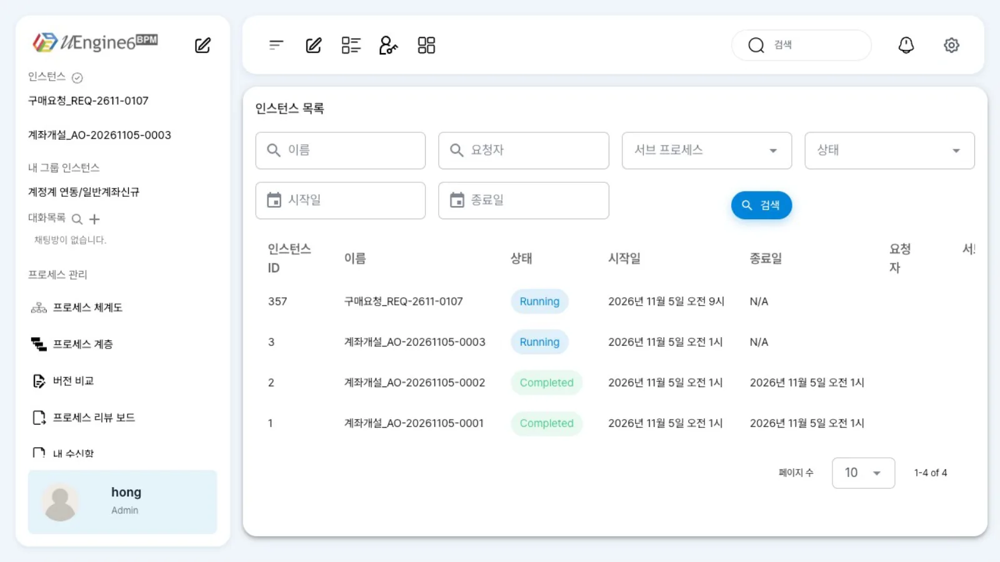
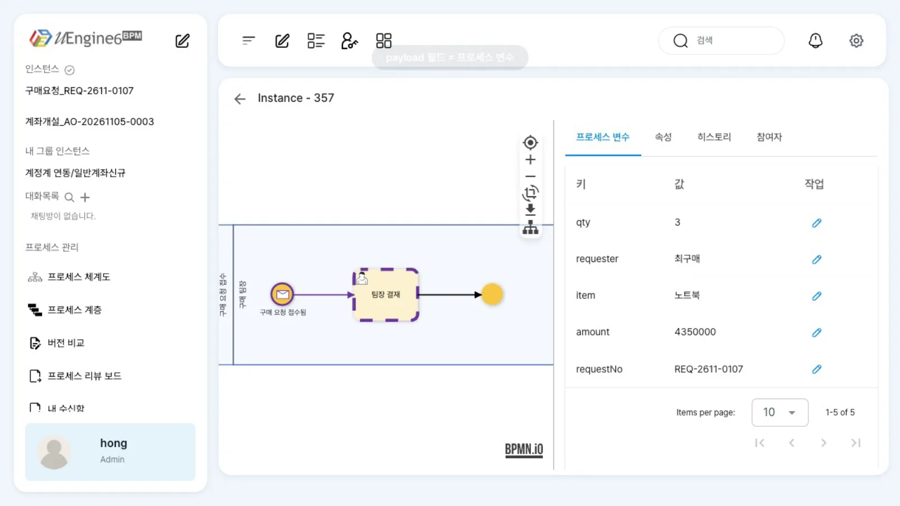
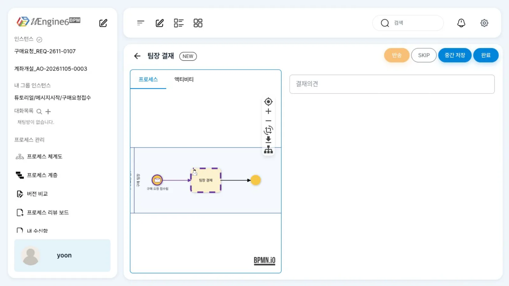

다른 시스템이 Kafka로 보낸 이벤트 하나로 프로세스 인스턴스를 시작합니다. 이벤트의 payload는 프로세스 변수가 되고, 상관 키로 같은 요청을 두 번 시작하지 않습니다.
무엇을 · 왜#
메시지 시작 이벤트(Message Start Event)는 사람이 「실행」을 누르는 대신, 외부 메시지가 인스턴스를 만드는 시작 이벤트입니다. 사내 구매 포털에 구매 요청이 올라오거나, 계정계에 계좌 개설 신청이 들어오는 순간처럼 일의 시작이 다른 시스템에서 일어날 때 씁니다. BPM을 부르는 쪽은 BPM의 REST API나 토큰을 몰라도 됩니다. 정해진 토픽에 정해진 이름의 이벤트를 내기만 하면 됩니다.
uEngine6에서는 이렇게 표현합니다.
| BPMN | uEngine6 |
|---|---|
<bpmn:startEvent> + <bpmn:messageEventDefinition/> |
파서가 MessageStartEvent로 만듭니다 |
| 메시지 이름 | 시작 이벤트 JSON의 eventKey. 배포할 때 이 이름이 BPM_EVENT_MAPPING에 「시작 이벤트」로 등록됩니다 |
| 메시지의 내용 | eventSynchronization의 아규먼트 목록(attributes). 이 가운데 하나를 상관 키(isCorrKey)로 표시합니다 |
| 상관(correlation) | 인스턴스의 corr_key. 같은 정의에 같은 상관 키로 실행 중인 인스턴스가 있으면 새로 시작하지 않습니다 |
이벤트는 Kafka 토픽 bpm-topic으로 들어옵니다. process-service는 메시지 헤더 type을 이벤트 이름으로 보고 BPM_EVENT_MAPPING에서 그 이름을 찾습니다.
시작 이벤트로 등록된 정의가 있으면 인스턴스를 시작하고, payload의 필드를 같은 이름의 프로세스 변수에 넣습니다.
구매 포털 ──(Kafka bpm-topic, 헤더 type=TutPurchaseSubmitted)──▶ process-service
│ BPM_EVENT_MAPPING: TutPurchaseSubmitted → 튜토리얼/메시지시작/구매요청접수 #Start (시작, 상관 키 requestNo)
▼
인스턴스 「구매요청_REQ-2611-0107」 시작, payload → 변수, 첫 작업 「팀장 결재」 → 윤팀장
이벤트 이름의 Tut 접두어
이 튜토리얼의 이벤트는 모두 Tut으로 시작합니다. 같은 Kafka를 쓰는 다른 예제(ERP의 PurchaseOrderApprovalRequested 등)와 이름이 겹치지 않도록 정한 약속일 뿐, 엔진이 요구하는 규칙은 아닙니다.
따라 하기#
예제는 「구매 요청 접수」 프로세스입니다. 구매 포털(여기서는 이벤트 콘솔)이 TutPurchaseSubmitted를 보내면 인스턴스가 시작되고, 첫 작업 「팀장 결재」가 윤팀장에게 갑니다.
- 정의 보기. 홍길동으로 로그인해
튜토리얼/메시지시작/구매요청접수를 엽니다. 시작 이벤트에 봉투 모양(메시지)이 있고, 레인 「구매 팀장」 하나에 「팀장 결재」가 있습니다.
튜토리얼/메시지시작/구매요청접수 - 시작 이벤트 패널. 시작 이벤트를 두 번 누르면 패널이 열립니다. 「이벤트 키」에
TutPurchaseSubmitted, 「아규먼트」에requestNo·item·qty·amount·requester가 있고,requestNo에는 「고유 키」와 「관계 키」가 켜져 있습니다. 「관계 키」가 상관 키입니다.
시작 이벤트 패널 — 이벤트 키와 아규먼트 - 이벤트 보내기. 이벤트 콘솔(이 장의 도구)을 띄웁니다. 헤더
type에TutPurchaseSubmitted, payload에 요청 내용을 넣고 보내기를 누릅니다. 오른쪽 「오간 메시지」에→ BPM 으로 · bpm-topic줄이 생깁니다.{"requestNo": "REQ-2611-0107", "item": "노트북", "qty": 3, "amount": 4350000, "requester": "최구매"}
이벤트 콘솔 — 보낸 이벤트와 이벤트 매핑 표 - 인스턴스 확인. 「관리자 페이지」(
/admin)의 인스턴스 목록에구매요청_REQ-2611-0107이 생깁니다. 이름은 정의의 인스턴스 이름 패턴구매요청_<%=instance.corrkey%>에서 왔습니다. 행을 열면 「프로세스 변수」 탭에 payload의 다섯 필드가 그대로 변수로 들어 있습니다.
관리자 화면 — 인스턴스 목록 
프로세스 변수 탭 — payload 가 변수로 - 첫 작업. 윤팀장으로 로그인하면 업무 목록에 「팀장 결재」가 와 있습니다. 이벤트로 시작한 인스턴스에는 「시작한 사람」이 없으므로, 레인에 담당자를 정해 두었습니다(아래 레인).

윤팀장의 「팀장 결재」 - 같은 요청을 한 번 더. 콘솔에서 같은 payload를 한 번 더 보냅니다. 관리자 화면의 인스턴스는 여전히 하나입니다. 같은 정의에
corr_key = REQ-2611-0107인 인스턴스가 실행 중이므로 새로 시작하지 않습니다.
설정 레퍼런스#
패널 칸 ↔ 정의 JSON#
| 패널(시작 이벤트) | JSON 속성 | 뜻 |
|---|---|---|
| 이벤트 키 | eventKey |
들어오는 메시지의 헤더 type과 같아야 합니다. 매핑 등록의 키 |
| 아규먼트 · 이름/타입 | eventSynchronization.attributes[].name · className |
payload의 필드. 타입은 String, Long 등 |
| 아규먼트 · 고유 키 | attributes[].isKey |
|
| 아규먼트 · 관계 키 | attributes[].isCorrKey |
상관 키. 첫 번째 것만 쓰입니다 |
| 데이터 매핑 | eventSynchronization.mappingContext |
필드 이름과 변수 이름이 다를 때. 같으면 비워 둡니다(모든 필드가 같은 이름의 변수로 들어갑니다) |
| (프로세스 변수 대화상자) 인스턴스명 패턴 | 프로세스 JSON instanceNamePattern |
<%=instance.corrkey%>로 상관 키를 이름에 넣습니다 |
배포한 정의(발췌)#
<bpmn:process id="Process_MsgStart" isExecutable="true">
<bpmn:extensionElements><uengine:properties>
<uengine:variable name="requestNo" type="Text">…</uengine:variable>
<!-- item, qty, amount, requester, 결재의견 -->
<uengine:json>{"definitionName":"튜토리얼/메시지시작/구매요청접수",
"instanceNamePattern":"구매요청_<%=instance.corrkey%>"}</uengine:json>
</uengine:properties></bpmn:extensionElements>
…
<bpmn:startEvent id="Start" name="구매 요청 접수됨">
<bpmn:extensionElements><uengine:properties><uengine:json>
{"eventKey":"TutPurchaseSubmitted",
"eventSynchronization":{"eventType":"TutPurchaseSubmitted",
"attributes":[{"name":"requestNo","className":"String","isKey":true,"isCorrKey":true},
{"name":"item","className":"String"},{"name":"qty","className":"Long"},
{"name":"amount","className":"Long"},{"name":"requester","className":"String"}],
"mappingContext":{"mappingElements":[]}}}
</uengine:json></uengine:properties></bpmn:extensionElements>
<bpmn:outgoing>F1</bpmn:outgoing>
<bpmn:messageEventDefinition id="Start_def"/>
</bpmn:startEvent>
전체 파일은 예제 폴더 bpm-tut-message-start/defs/구매요청접수.bpmn입니다.
레인: 시작자가 없다#
화면의 「실행」이나 POST /instance로 시작하면 첫 레인은 시작한 사람이 맡습니다. 이벤트로 시작하면 시작한 사람이 없으므로, 첫 작업이 있는 레인에는 담당 규칙이 있어야 합니다.
이 예제에서는 담당자를 정해 두었습니다. 그룹·역할로 지정하는 방법은 레인과 담당자를 보세요.
{"roleResolutionContext":{"_type":"org.uengine.kernel.DirectRoleResolutionContext","endpoint":"yoon","resourceName":"윤팀장"}}
메시지 계약#
| 헤더 | 필수 | 값 |
|---|---|---|
type |
예 | 이벤트 이름 = 시작 이벤트의 eventKey |
corrKey |
아니오 | payload에 상관 키 필드가 없을 때 쓸 상관 키 값. 이때 인스턴스의 corr_key는 헤더 값이 되지만 변수 requestNo는 생기지 않습니다(payload에 없으므로) |
| payload 필드 | 타입 | 변수 |
|---|---|---|
requestNo |
문자열 | 상관 키. 인스턴스의 corr_key와 변수 requestNo |
item · requester |
문자열 | 같은 이름의 변수 |
qty · amount |
정수 | 같은 이름의 변수. 게이트웨이에서 숫자로 비교하려면 정수로 보냅니다 |
배포 뒤 등록된 매핑은 DB에서 볼 수 있습니다.
select event_name, definition_id, tracing_tag, correlation_key, is_start_event
from bpm_event_mapping where definition_id like '튜토리얼/메시지시작/%';
-- TutPurchaseSubmitted | 튜토리얼/메시지시작/구매요청접수.bpmn | Start | requestNo | t
이벤트 콘솔#
영상과 이 장에서 쓴 작은 도구입니다(Node 20, npm i kafkajs). Kafka bpm-topic으로 이벤트를 보내고, bpm-topic·bpm-brodcast에 오가는 메시지를 한 화면에 보여 줍니다.
BPM_DB_URL을 주면 이벤트 매핑 표도 보입니다. 소스는 예제 폴더 bpm-tut-message-start/tool/event-console.mjs이고, 핵심은 아래 몇 줄입니다.
import { Kafka } from 'kafkajs'
const kafka = new Kafka({ clientId: 'tut-event-console', brokers: ['localhost:9092'] })
const producer = kafka.producer(); await producer.connect()
await producer.send({ topic: 'bpm-topic', messages: [{
value: JSON.stringify({ requestNo: 'REQ-2611-0107', item: '노트북', qty: 3, amount: 4350000, requester: '최구매' }),
headers: { type: 'TutPurchaseSubmitted' } }] })
Kafka 명령줄 도구로도 같은 일을 할 수 있습니다. 헤더는 --property parse.headers=true로 넣고, 한 줄은 헤더이름:값과 본문을 탭으로 나눕니다(이 스택의 Kafka 컨테이너에서 확인).
printf 'type:TutPurchaseSubmitted\t{"requestNo":"REQ-2611-0108","item":"모니터","qty":2,"amount":560000,"requester":"최구매"}\n' | \
kafka-console-producer --bootstrap-server localhost:9092 --topic bpm-topic --property parse.headers=true
# Kafka 가 도커 컨테이너라면: docker exec -i <kafka 컨테이너> kafka-console-producer …
알려진 제약#
손으로 쓴 XML에는 definitionName을 넣으세요
프로세스 JSON에 definitionName이 없으면, 이벤트로 시작한 인스턴스의 첫 사람 작업에서 NullPointerException(HumanActivity.createParameter)이 나 작업이 생기지 않고, Kafka 소비가 같은 메시지를 다시 시도합니다.
화면에서 저장한 정의는 프런트가 넣어 주므로 문제가 없습니다. 파일로 배포하는 정의에만 해당합니다.
- 상관 키 필드가 payload에도 헤더
corrKey에도 없으면, 엔진은 매핑의 상관 키 이름(requestNo)을 값으로 씁니다. 실제로 인스턴스구매요청_requestNo가 생기고, 그 인스턴스가 실행 중인 동안은 상관 필드 없는 다음 이벤트가 새로 시작하지 못합니다. 상관 필드는 꼭 담아 보내세요. - 상관 키를 판단할 때는 실행 중(
Running) 인스턴스만 봅니다. 앞 인스턴스가 끝난 뒤 같은 요청번호로 다시 보내면 새 인스턴스가 시작됩니다. 중복을 끝까지 막아야 한다면 보내는 쪽에서 막으세요. - 같은 이벤트 이름을 시작 이벤트로 가진 정의가 둘 이상이면 둘 다 시작합니다. 이벤트 이름은 정의마다 다르게 짓는 편이 안전합니다.
- 매핑은 배포할 때 추가되기만 합니다. 이벤트 키를 바꿔 다시 배포해도 옛 이름의 행이 남으므로
BPM_EVENT_MAPPING에서 직접 지웁니다. - 이 장의 스택은 Kafka 모드입니다(
uengine.messaging.mode: kafka). 기본값인 폴링 모드에서는 Kafka 대신POST /inbox로 이벤트를 넣습니다(이벤트로 시스템 잇기).
확인 문제#
헤더 `type`을 빼고 payload만 보내면 어떻게 되나요?
아무 인스턴스도 시작되지 않습니다. process-service는 type 헤더가 있는 메시지만 외부 이벤트로 처리하고, 없으면 BPM 내부 메시지로 보고 외부 이벤트 경로를 건너뜁니다.
같은 `requestNo`로 두 번 보냈는데 인스턴스가 하나뿐입니다. 두 번째 이벤트는 버려졌나요?
새 인스턴스는 시작하지 않았지만 버려지지도 않았습니다. 엔진은 같은 상관 키의 실행 중 인스턴스를 찾아 payload를 그 인스턴스의 변수에 다시 씁니다. 그 이벤트를 기다리는 활동이 없어도 그렇습니다. 같은 요청번호로 qty: 5, amount: 999를 보내 보면 실행 중인 인스턴스의 qty·amount가 그 값으로 바뀝니다. 같은 이벤트를 다시 보낼 때는 값이 같아야 안전합니다.
payload의 `qty`를 `"3"`(문자열)로 보내면 무엇이 달라지나요?
변수 qty에 문자열 "3"이 들어갑니다. 게이트웨이 조건 qty >= 3처럼 숫자와 비교하면 엔진이 값의 타입으로 비교하므로 예상과 다른 경로로 갈 수 있습니다. 숫자는 숫자로 보내세요.